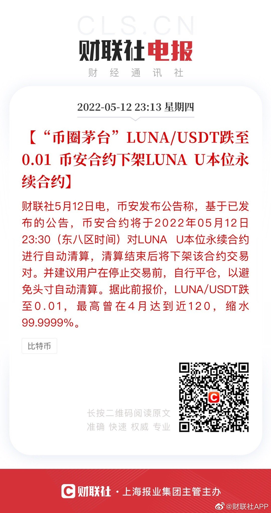

出货了言而有信。有人跟我拼单lsls幻想吗。满200-30，还差150。再用一个-5元的券，然后凑单两节五号电池，可以用掉主页搜关键字红包-5元，再用一个省钱卡，最终到手价23元，历史好价。（好评还可以返现1元
二级市场非常好的一点是可以看k线。我们可以看美帝的k线，研究证券市场的历史。也可以看无数个股指数的k线，研究每一个大顶大底到底是什么形态，有什么规律和特点。研究和借鉴历史k线，是江户时代的米商送给我们的价值连城的小礼物。
下架？不能交易了？有没有懂的朋友说说数字货币为什么暴跌后会自动清仓不能交易了@财联社APP:【LUNA/USDT跌至0.01 #币安合约下架LUNAU本位永续合约#】财联社5月12日电，币安发布公告称，基于已发布的公告，币安合约将于2022年05月12日23:30（东八区时间）对LUNA U本位永续合约进行自动清算，清算结束后将下架该合约交易对。并建议用户在停止交易前，自行平仓，以避免头寸自动清算。据此前报价，LUNA/USDT跌至0.01，最高曾在4月达到近120，缩水99.9999%。